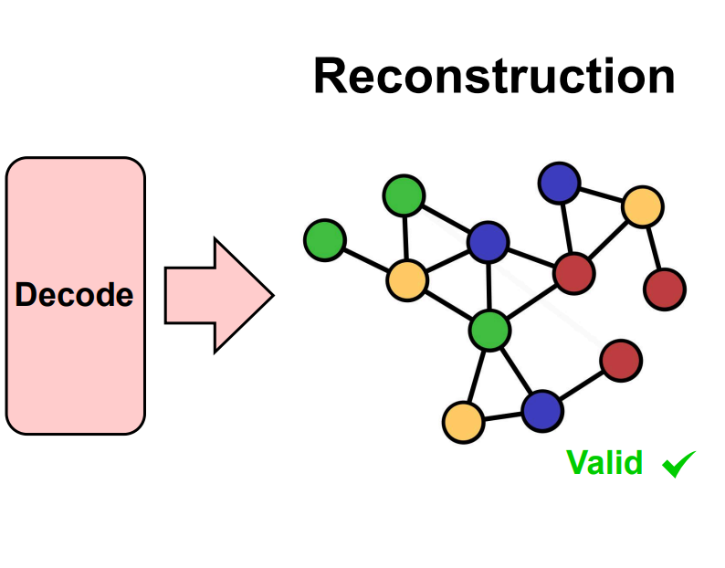
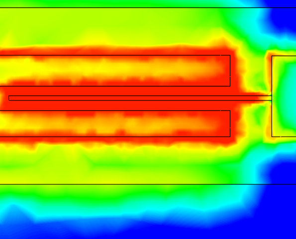
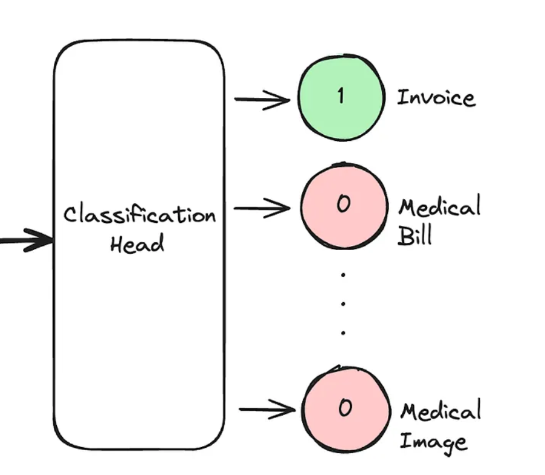

Main
CV
Updates
Teaching
Publications
Gabriel Melo
PhD Student · Machine Learning · Graphs & Uncertainty
Papers

The quest for the GRAph Level autoEncoder (GRALE)
P Krzakala,
G Melo
, C Laclau, F d'Alché-Buc, R Flamary
arXiv preprint, 2025
TL;DR:
Proposes GRALE, a scalable autoencoder for graph-level representation learning.

Study of Impedance Matching in CPW Cavities for Circuit QED and Quantum Computing Applications
(in Portuguese)
G Melo
, F Rouxinol
Galoá, 2021
TL;DR:
Designs and simulates a Marchand balun to improve signal coupling for superconducting quantum circuits.
Blogposts

Fine-tuning Donut Transformer for Document Classification
Gabriel Melo
Medium, 2024
TL;DR:
Compares encoder-decoder vs encoder-only fine-tuning for Donut; encoder-only is faster and equally accurate for document classification.